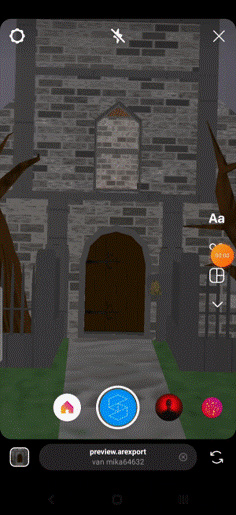

During my half year Internship with Arfected I developed my skills
in creating 3D models in Blender and additional software like
Photoshop. Also during this time I worked on amazing client projects
which helped me progress my skills in a professional environment.
But what shines the most is my main project that I made all workable
in Spark AR to make an immersive experience in a small limited workspace.

Frontside
PDF with my examples:
Download here